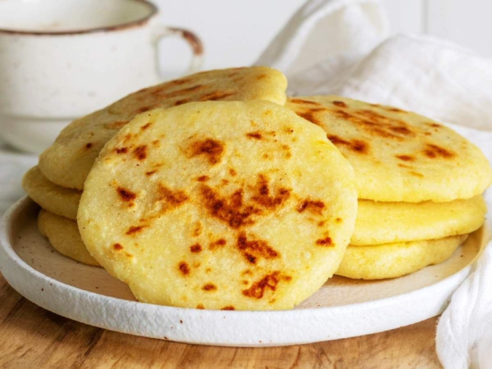
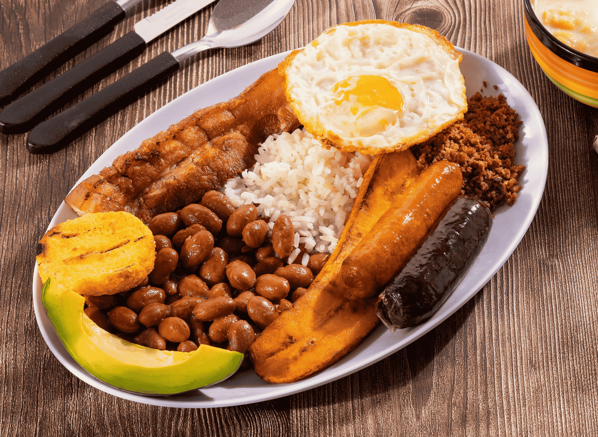
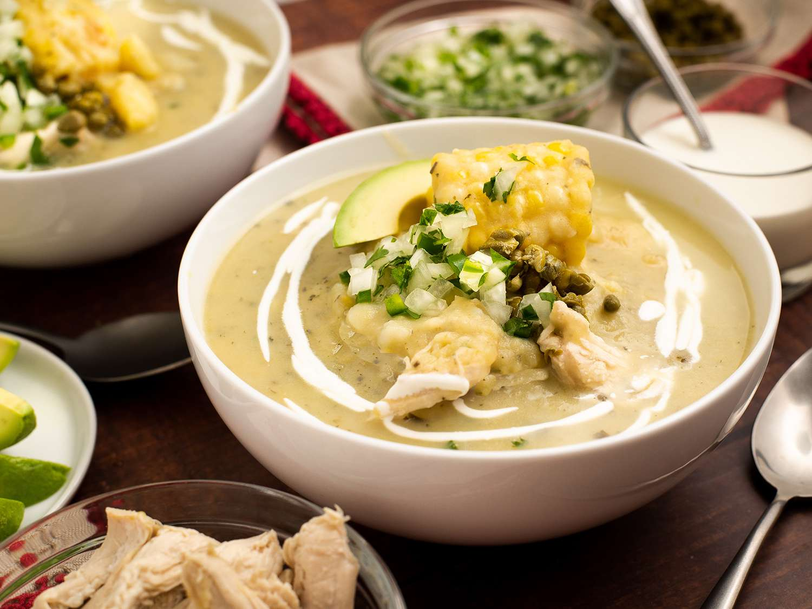

Uma viagem gastronômica pelo coração dos Andes e do Caribe.

Tradicional pão de milho colombiano, essencial no café da manhã ou recheado com queijo e carnes.

O prato nacional: uma combinação farta de arroz, feijão, carne moída, chouriço, ovo e abacate.

Sopa reconfortante de Bogotá, preparada com três tipos de batatas, frango e ervas guascas.